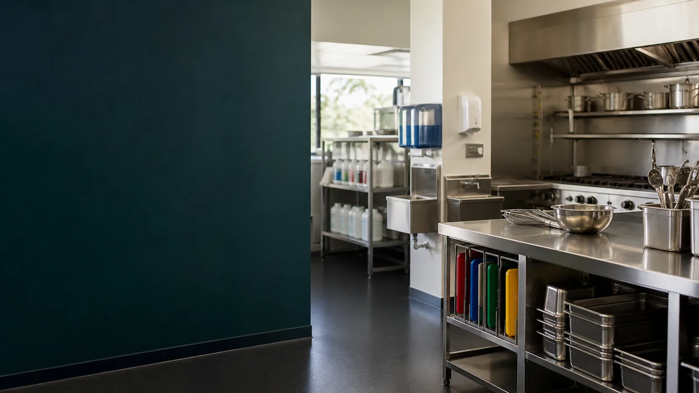
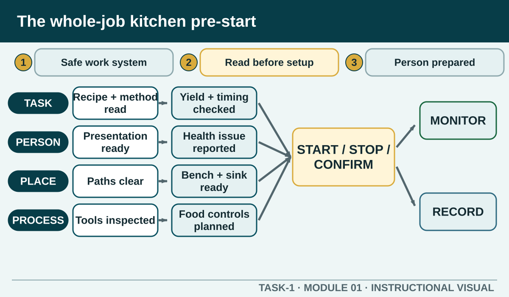

Prior learning
Recall the previous lesson and bring forward one question or completed learning artefact.
Task 1 · Lesson 1 of 16
Connect personal readiness, workplace safety, food hygiene, production planning and honest evidence before treating any one control as an isolated checklist item.
Prior learning
Recall the previous lesson and bring forward one question or completed learning artefact.
Success criteria
Learning boundary
This lesson supports preparation and formative practice. The current authorised package and trainer/assessor control formal products, observations, dates and submission.


Kitchen safety is not one moment at the beginning of a practical. It is a system of decisions made before, during and after production. A safe worker reads the full task, prepares themselves, checks the work area, selects suitable equipment, protects food, communicates changes and completes an effective clean-down.
The parts of the system depend on one another. Clean hands cannot protect ready-to-eat food if the board is contaminated. A tidy bench cannot make damaged electrical equipment safe. A correct recipe cannot compensate for an unreported allergen concern. Strong hospitality practice joins people, place, process and product into one controlled workflow.
Begin by identifying the product or service outcome, the expected yield, the available time, the required equipment and any steps that create extra risk. Read the method from beginning to end so that heating, cooling, resting, storage or service requirements do not appear as surprises halfway through the job.
Mark anything that must be confirmed with the teacher: an unfamiliar tool, a missing ingredient, an unclear instruction, a known allergy issue or a step outside your training. Asking early is professional. Starting quickly without understanding the task usually creates rework, waste and avoidable risk.
Personal readiness includes the required clean uniform, enclosed non-slip footwear, controlled hair, managed jewellery and nails, and any task-specific personal protective equipment. It also includes being fit to handle food and reporting illness, symptoms, wounds or another condition that may affect safe work.
Do not make a private judgement that a health concern is probably harmless. Report it to the responsible person and follow the authorised direction. This protects customers, classmates and colleagues while allowing the workplace to decide what duties, controls or exclusions are appropriate.
Scan the work zone before setting up. Look for wet or obstructed floors, unstable storage, hot surfaces, damaged tools, unsafe leads, leaking or unlabelled chemicals, poor separation between raw and ready-to-eat work, and anything that could block a safe movement path.
Correct only what is within your training and authority. A simple obstruction may be moved safely. A damaged appliance, unknown spill or unsafe piece of equipment needs to be kept from use and reported. Preparing the place also means arranging ingredients, tools, waste and finished-product areas so that people do not need to cross paths unnecessarily.
A pre-start plan is only the first version of the job. During production, monitor what is actually happening: Is a control still working? Has the bench become crowded? Has a tool been contaminated? Is the product progressing as expected? Has another person entered the work zone or changed the sequence?
When conditions change, pause and make a controlled decision. Protect people and food, communicate with the relevant person, follow the authorised corrective action and update the plan. Continuing blindly because the original plan looked good is not competent practice.
After the task, separate reflection from formal assessment evidence. A reflection can explain what you did, why you chose a control, what result you observed and what you would improve. It cannot prove that an assessor observed a skill or that every requirement of a formal task was met.
Record only what actually occurred. Never invent a temperature, time, signature, observation or product result. Use the current authorised Task 1 package and trainer or assessor directions for the evidence that must be submitted.
Phone view: swipe across the diagram, or use Open larger below.


External media loads only after you choose it.
Source-linked video
Watch for: List the hazards the café owner links to pace and workflow, then notice how communication and awareness operate as controls.
Formative practice
Each option explains the workplace consequence. These responses save on this device.
Written application
Use observable facts, explain the consequence and keep local assessment or procedure details with the authorised source.
Self-checkApply and keep evidence
Identify observable kitchen hazards, explain the possible harm and choose a response within a learner's training and authority.
Use the check result, activity record and written response as formative learning evidence only. Formal evidence remains controlled by the current package and trainer/assessor.
Next: WHS responsibilities.
Authorised source note: Source basis: signed 2026–2027 Hospitality TAS and the authorised Cycle 1 Welcome to the Kitchen sequence. Assessment conditions and local pre-start procedures remain Teacher to confirm.